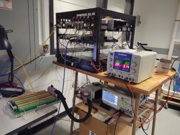
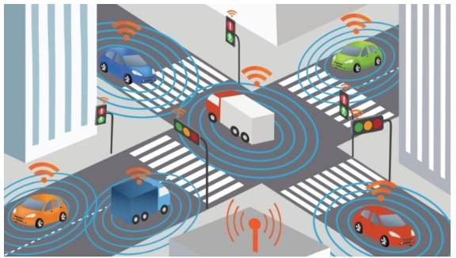
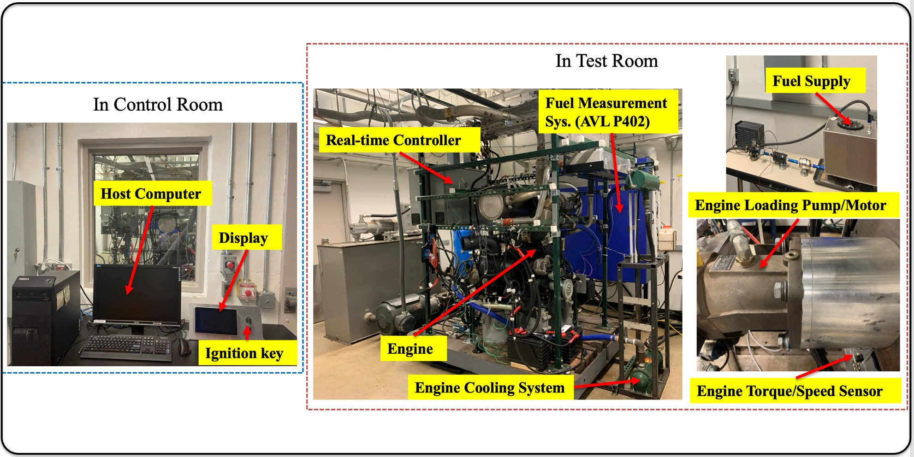
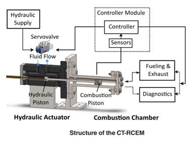
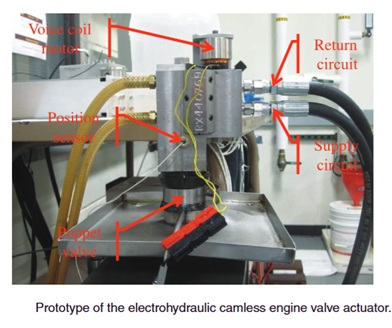
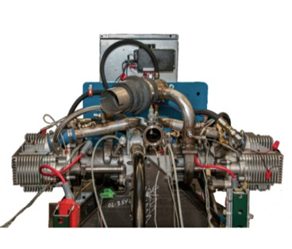
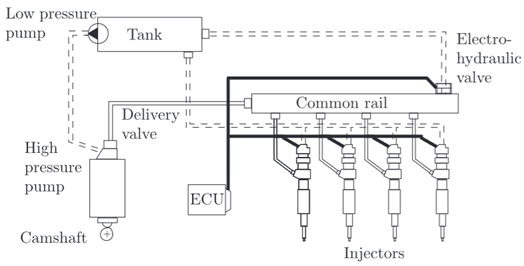
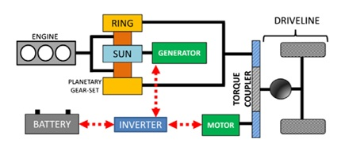

The Automotive Propulsion Control Laboratory (APCL) aims at transforming the energy storage, conversion and power transfer processes for automobiles and other mobile applications with mechatronic systems and advanced control methodologies. We investigate the replacement of mechanical components in the automotive propulsion system with electronically controlled mechatronic actuators so that significant reduction of energy consumption and emissions can be achieved. The mechatronic propulsion system and advanced control can not only improve system efficiency but also enable renewable energy for transportation. The research activities include control theory development for tracking and disturbance rejection, modeling and control of automotive propulsion systems, and design of novel actuators.
Principal Investigator
Prof. Zongxuan Sun
Postdoctoral Researchers
Dr. Berk Altiner

Dr. Arunava Banerjee
Dr. Rajasree Sarkar
Graduate Students
Aswath Govindaraju

Aditya Patil
Jianshe Guo
Past Students
Information will be added here.
Research
Data-Driven Control for Multi-Fuel UAS Engines
This project develops data-driven control strategies for multi-fuel unmanned aerial system (UAS) engines, enabling reliable performance under varying fuel types and operating conditions. The approach leverages Gaussian Process Regression (GPR) models built from experimental data to capture the complex, nonlinear dynamics of engine combustion and power output. Control strategies are designed using reinforcement learning and model-based methods, allowing the engine to adapt in real time to changes in fuel properties, such as energy density and combustion delay, without requiring explicit physical models. By incorporating safety constraints and operating limits, the controllers ensure stable, efficient, and robust engine operation across diverse fuel blends. Overall, the project contributes to the development of flexible, resilient propulsion systems that extend the operational range of UAS, reduce dependence on a single fuel type, and enhance autonomy in contested or resource-limited environments.
Optimizing Energy and Safety of Connected and Autonomous Vehicles
This project develops interaction-aware and energy-efficient control strategies for Connected and Autonomous Electric Vehicles (CAEVs) in mixed traffic. A Model Predictive Control framework is designed to co-optimize vehicle speed, powertrain operation, and safety under real-world conditions. By integrating human driver behavior models with battery–powertrain dynamics, the project enables CAEVs to minimize energy use while ensuring safe interactions. Safety is further enhanced through time-to-collision–based constraints and risk-aware metrics, resulting in next-generation control strategies that harmonize energy efficiency, safety, and intelligent decision-making for sustainable transportation systems.
Exploring Next-Generation Off-Road Vehicles: Automation, Efficiency, and Productivity
This project focuses on advancing automation, energy efficiency, and productivity in off-road vehicles such as loaders, excavators, tractors, and backhoe loaders. While essential to industries like agriculture, construction, mining, and forestry, these machines face major challenges due to their dependence on skilled operators, high energy use, and emissions. Unlike on-road vehicles, their complex powertrain architectures, which integrate both driving and working functions, make full automation and efficiency improvements particularly difficult. To address these challenges, the project develops and validates approaches in modeling, energy optimization, and motion control algorithms, supported by advanced testbeds that enable systematic evaluation under realistic operating conditions. The outcomes provide a pathway toward automated, sustainable, and high-performance off-road vehicles, delivering benefits across both industry and academia.
Tracking Control Theory Development
In engineered systems, a large class involves creating motions following certain desired trajectories. For the automotive propulsion system, such motions are generated by interconnected complex mechanical systems. For example, the camshaft that is connected to the crankshaft opens and closes the intake and exhaust valves. The piston that forms the combustion chamber is also connected to the crankshaft. Those mechanical motions control the gas exchange and compression dynamics and directly affect the combustion efficiency and emissions. To gain flexibility for controlling the critical dynamics, we propose to replace the mechanical components with electronically controlled mechatronic actuators. However, once the mechanical links are removed, the ability to ensure precise motion of the mechatronic systems becomes necessary, which leads to this work.
Camless Engine
Compared to traditional fuel metering systems, such as carburetors and port fuel injection, direct fuel injection offers significantly greater flexibility and precision in delivering fuel to the combustion chamber. By controlling both the timing and quantity of injected fuel with high accuracy, it allows engineers to fine-tune combustion processes across a wide range of operating conditions. This capability not only enables optimization of fuel consumption and emissions, but also ensures that power output and engine responsiveness are maintained, striking an effective balance between efficiency, performance, and environmental impact.
Free Piston Engine
The free-piston engine presents a promising alternative to conventional internal combustion engines. Unlike traditional designs that rely on a crankshaft to synchronize piston motion, the free-piston configuration uses hydraulic fluids for synchronization, offering the unique ability to vary the compression ratio dynamically. This flexibility allows for more efficient combustion and supports operation across a wider range of fuels and conditions. By eliminating the crankshaft, the free-piston engine achieves a more compact design with higher efficiency potential, making it attractive for next-generation power and propulsion systems. However, these advantages come with significant challenges in terms of control and stability, as precise and robust coordination of piston motion is essential for reliable operation. Addressing these control challenges is central to realizing the full benefits of free-piston engine technology.
Common Rail Fuel Injection System
 Compared to traditional fuel metering systems such as carburetors and port fuel injection, direct fuel injection provides greater flexibility and precision in supplying fuel to the combustion chamber. By enabling accurate control over both the timing and quantity of injected fuel, it ensures more efficient mixing and combustion under a wide range of operating conditions. This level of precision helps overcome the limitations of older systems, where fuel delivery is less responsive to rapid changes in load and speed. The advantages of direct injection allow engineers to optimize fuel consumption and emissions without sacrificing engine performance. By promoting more complete combustion, it reduces fuel waste and lowers the release of harmful pollutants, while still maintaining power output and responsiveness. This makes direct fuel injection a key enabler for the design of modern engines that must balance efficiency, emissions compliance, and performance in increasingly demanding applications.Hybrid Powertrain Research Platform
To provide an accurate and flexible hybrid powertrain emulation tool for hybrid powertrain development, a rapid prototyping hybrid powertrain research platform, which employs a transient hydrostatic dynamometer that emulates the dynamics of various hybrid power sources and different hybrid architectures, is constructed. This will greatly expedite the research on various hybrid powertrain architectures and control methodologies, without actually building the complete physical system.
Publications
Journal Publications
- Okada Haruna, Abhinav Abraham, Dev Patel, Dhananjay Ambre, Sathya Aswath Govind Raju, Jacob Stafford, Niranjan Miganakallu Narasimhamurthy et al. Onboard optical fuel sensing for enhanced combustion control in a multi-fuel compression-ignition engine. International Journal of Engine Research. [https://journals.sagepub.com/doi/abs/10.1177/14680874241307081]
- He Suiyi, Shian Wang, Yunli Shao, Zongxuan Sun, and Michael W. Levin. A Connectivity-Based Real-Time Traffic Prediction Considering Lane-Changing Maneuvers with Application to Eco-Driving Control of Electric Vehicles. IEEE Transactions on Vehicular Technology (2025). [https://ieeexplore.ieee.org/abstract/document/11097903]
- Navaneeth Pushpalayam, Cuong M Nguyen, Zongxuan Sun, David A Rothamer, Kenneth Kim, Chol-Bum Kweon, Rajesh Rajamani. Real-time combustion progress estimation using deep learning. Mechanical Systems and Signal Processing (2025). [https://www.sciencedirect.com/science/article/pii/S0888327025002857]
- Berk Altiner, Zongxuan Sun, Kenneth Kim, Chol-Bum Mike Kweon. Convex modeling and control of multi-fuel compression ignition engines. Proceedings of the Institution of Mechanical Engineers, Part I: Journal of Systems and Control Engineering (2025). [https://journals.sagepub.com/doi/abs/10.1177/09596518241302483]
- Cuong M Nguyen, Navaneeth Pushpalayam, Zongxuan Sun, David A Rothamer, Kenneth Kim, Chol-Bum Kweon, Rajesh Rajamani. Deep Learning-Based Combustion Quality Classification for Compression-Ignition Engines Using Non-Intrusive Accelerometers. IEEE Transactions on Instrumentation and Measurement (2025). [https://ieeexplore.ieee.org/abstract/document/10938807]
- Maziar Zamanpour, Suiyi He, Michael W Levin, Zongxuan Sun. Incorporating lane-change prediction into energy-efficient speed control of connected autonomous vehicles at intersections. Transportation Research Part C: Emerging Technologies (2025). [https://www.sciencedirect.com/science/article/pii/S0968090X24004893]
- MWoongsun Jeon, Anastasis Georgiou, Zongxuan Sun, David A Rothamer, Kenneth Kim, Chol-Bum Kweon, Rajesh Rajamani. Health monitoring of in-cylinder sensors and fuel injectors using an external accelerometer. Structural Health Monitoring (2025). [hhttps://journals.sagepub.com/doi/full/10.1177/14759217241232257]
Conference Publications
- Sathya Aswath Govind Raju, Zongxuan Sun, Kenneth Kim, Chol-Bum Mike Kweon.Data-driven Robust Control for Multi-fuel Compression Ignition Engines. In 2025 American Control Conference (ACC). [https://ieeexplore.ieee.org/abstract/document/11107627]
- Sathya Aswath Govind Raju, Zongxuan Sun, Kenneth Kim, Chol-Bum Kweon. Data-driven Modeling and Control Framework for Multi-Fuel Compression-Ignition Engines. In 2025 SAE Technical Paper. [https://www.sae.org/publications/technical-papers/content/2025-01-8349]
- Sai Ranjeet Narayanan, Sathya Aswath Govind Raju, Zongxuan Sun, Suo Yang, Kenneth Kim, Chol-Bum Kweon. Iso-surface sampler for developing high-dimensional engine controllers using high-fidelity CFD models. In AIAA SCITECH 2025 Forum. [https://arc.aiaa.org/doi/abs/10.2514/6.2025-0789]
- Sai Ranjeet Narayanan, Zongxuan Sun, Suo Yang, John J Miller, Simon Mak, Kenneth Kim, Chol-Bum Kweon. Local-Transfer Gaussian Process (LTGP) Learning for Multi-Fuel Capable Engines. In AIAA SCITECH 2025 Forum. [https://arc.aiaa.org/doi/abs/10.2514/6.2025-0790]
- Pradeep Kumar Pavalavanni, Sai Ranjeet Narayanan, Zongxuan Sun, Suo Yang, Kenneth Kim, Chol-Bum Kweon. Bi-Fidelity Neural Network Model for Multi-fuel Capable Internal Combustion Engines. In AIAA SCITECH 2025 Forum. [https://arc.aiaa.org/doi/abs/10.2514/6.2025-0159]
- Praise Noah Johnson, Taaresh S Taneja, Zongxuan Sun, Suo Yang, Kenneth Kim, Chol-Bum Kweon. Phenomenological Modeling of Plasma-Assisted Methane Ignition Using Plasma Energy Fraction Manifolds. In AIAA SCITECH 2025 Forum. [https://arc.aiaa.org/doi/abs/10.2514/6.2025-0166]
News and open positions will be posted here.